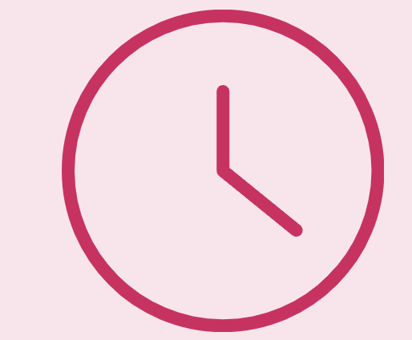

my journey at the university of washington began 🍂
earned an honorary mention for the ai-powered system for optimizing speed limits and congestion project.
key milestones ⛄
joined this amazing business fraternity, diving into professional development and making connections with incredible people!
created musicmatch, an app that connects people based on their music taste. used python, html, css, and javascript, spotify apis, and even managed it on aws ec2.
new roles 🌷
took on a leadership role and organized career talks and networking events, helping fellow students in the allen school of cs.
summer breakthroughs and learning experiences ☀️
had an amazing summer internship where i designed, developed, and launched vamsa, an impactful app for cultural connection and heritage preservation using tools like react native and azure sql.
took multiple ai courses focusing on building advanced generative ai applications and chatbots with python and flask.
built ai workflows and boosted model performance with openai's fine-tuning api. it was very informative and fast-paced.
developed and deployed an app using watson nlp and flask to analyze text feedback into six distinct emotions.
leading with purpose 🍁
took on a bigger leadership role in my business organization, excited to help our chapter grow.
had the chance to share my project and journey to the incoming cseed cohort, helping inspire the next wave of innovators!
leveling up and looking ahead ❄️
created our first tech committee and started mentoring two amazing students (my littles!) — so proud to support them.
interviewed 3 professors in the paul allen school and got our episodes up on spotify!
brought together current TAs to give insight and advice to students interested in becoming a TA.
